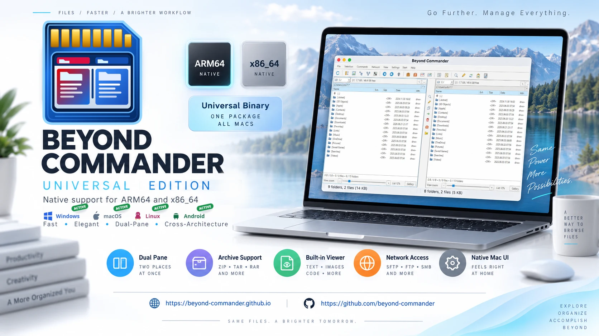

License & pricing
One simple user-based price, following the practical licensing principles used by Total Commander.
Uniform price
25 EUR + VAT / user

30-day trial
Use the complete trial for 30 days. After the trial, purchase a license or remove the software.
One license belongs to one user
The license is assigned to a person rather than one computer.
Multiple computers for the same user
The licensed user may use Beyond Commander on multiple personal/work computers.
Business licensing by concurrent users
Organizations need approximately as many user licenses as the maximum number of people using the software at the same time.
Updates included
Order licenseLicensing model reference: Total Commander ordering/FAQRegistered users receive product updates under the published license terms.